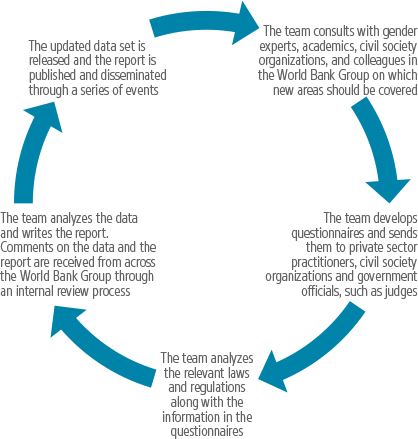

In its fifth edition, Women, Business and the Law expands to 189 economies.
Major differences in legal gender parity persist around the world. Many laws continue to prevent women from improving their own well-being and that of their families by working or running a business.
How can governments improve women’s access to entrepreneurial and employment activities? Answering this question requires understanding many factors—from access to education and health care, to social and cultural norms and many things beyond. One important factor is how laws, regulations and institutions differentiate between women and men in ways that affect women’s incentives or capacity to work or set up and run a business.
Since its inception in 2009, Women, Business and the Law has collected data on laws and regulations constraining women’s entrepreneurship and employment. The data set illuminates how government policies limit women’s economic participation through unequal laws and a business environment that does not adequately support women’s employment.
This edition of Women, Business and the Law introduces an innovation by scoring questions at the indicator level. Theindicator-level scoring is meant to promote discussion and analysis on which laws matter the most for women’s entrepreneurship and employment, as well as encourage economies to follow good practices and to reform.
By gathering and analyzing quantitative data to compare gender legal differences across economies and over time, Women, Business and the Law offers objective benchmarks for assessing where reforms have occurred that are helpful in measuring global progress toward gender legal equality (box 2.1).
Box 2.1 SUSTAINABLE DEVELOPMENT GOAL INDICATOR 5.1.1
On September 25, 2015, member states of the United Nations adopted a set of goals aimed at ending poverty, protecting the planet and ensuring prosperity for all. This new sustainable development agenda consists of 17 “Global Goals,” each with specific targets to be achieved in the next 15 years. Realizing the Sustainable Development Goals (SDGs) is a collective effort between governments, the private sector and civil society.
SDG Goal 5 strives to achieve gender equality and empower all women and girls. To accomplish this, economies must focus their efforts on tackling the systemic barriers restricting women’s rights and opportunities. The objective of Target 5.1 is to end all forms of discrimination against women and girls everywhere. This requires a framework of indicators and statistical data to monitor developments, inform policy decisions and ensure stakeholder accountability.
Creating an enabling environment for women and men to enjoy equal rights and opportunities is enshrined in Indicator 5.1.1, which aims to measure whether or not legal frameworks are in place to promote, enforce and monitor equality and nondiscrimination on the basis of sex. Although there has been progress in reforming laws, unequal constitutional and legislative provisions in family, personal, penal and other laws persist. Indicator 5.1.1 is crucial to accelerating legal reform in these areas by tracking the removal of discriminatory provisions as well as the adoption of laws and implementation mechanisms that promote gender equality.
UN Women, the OECD Development Centre’s Social Institutions and Gender Index and the World Bank Group’s Women, Business and the Law are jointly working to develop, measure and track progress on Indicator 5.1.1. It is hoped that this collaboration will significantly contribute to efforts to achieve gender equality and women’s empowerment by 2030.
Source: United Nations Sustainable Development Goals, 2015.
Women, Business and the Law 2018, the fifth in a series, provides data on legal and regulatory barriers to women’s entrepreneurship and employment in 189 economies, up from 173 covered in the 2016 edition (table 2.1). This expansion enhances the global data on laws and regulations affecting women’s prospects as entrepreneurs and employees whileallowing broader comparison.
TABLE 2.1 EXPANDED GEOGRAPHIC COVERAGE
Region |
Economies previously in the report |
Economies added to the report |
Total number of economies |
East Asia & Pacific |
Brunei Darussalam; Cambodia; China; Fiji; Hong Kong SAR, China; Indonesia; Lao PDR; Malaysia; Mongolia; Myanmar; Papua New Guinea; Philippines; Singapore; Taiwan, China; Thailand; Timor-Leste; Tonga; Vietnam |
Kiribati; Marshall Islands; Micronesia, Fed. Sts.; Palau; Samoa; Solomon Islands; Vanuatu |
25 |
Europe & Central Asia |
Albania; Armenia; Azerbaijan; Belarus; Bosnia and Herzegovina; Bulgaria; Croatia; Georgia; Kazakhstan; Kosovo; Kyrgyz Republic; Latvia; Lithuania; Macedonia, FYR; Moldova; Montenegro; Romania; Russian Federation; Serbia; Tajikistan; Turkey; Ukraine; Uzbekistan |
Cyprus; San Marino |
25 |
OECD high income |
Australia; Austria; Belgium; Canada; Chile; Czech Republic; Denmark; Estonia; Finland; France; Germany; Greece; Hungary; Iceland; Ireland; Israel; Italy; Japan; Korea, Rep.; Luxembourg; Netherlands; New Zealand; Norway; Poland; Portugal; Slovak Republic; Slovenia; Spain; Sweden; Switzerland; United Kingdom; United States |
|
32 |
Latin America & Caribbean |
Antigua and Barbuda; Argentina; Bahamas, The; Barbados; Belize; Bolivia; Brazil; Colombia; Costa Rica; Dominica; Dominican Republic; Ecuador; El Salvador; Grenada; Guatemala; Guyana; Haiti; Honduras; Jamaica; Mexico; Nicaragua; Panama; Paraguay; Peru; Puerto Rico (U.S.); St. Kitts and Nevis; St. Lucia; St. Vincent and the Grenadines; Suriname; Trinidad and Tobago; Uruguay; Venezuela, RB |
|
32 |
Middle East & North Africa |
Algeria; Bahrain; Djibouti; Egypt, Arab Rep.; Iran, Islamic Rep.; Iraq; Jordan; Kuwait; Lebanon; Malta; Morocco; Oman; Qatar; Saudi Arabia; Syrian Arab Republic; Tunisia; United Arab Emirates; West Bank and Gaza; Yemen, Rep. |
Libya |
20 |
South Asia |
Afghanistan; Bangladesh; Bhutan; India; Maldives; Nepal; Pakistan; Sri Lanka |
|
8 |
Sub-Saharan Africa |
Angola; Benin; Botswana; Burkina Faso; Burundi; Cameroon; Chad; Congo, Dem. Rep.; Congo, Rep.; Côte d’Ivoire; Ethiopia; Equatorial Guinea; Gabon; Ghana; Guinea; Kenya; Lesotho; Liberia; Madagascar; Malawi; Mali; Mauritania; Mauritius; Mozambique; Namibia; Niger; Nigeria; Rwanda; São Tomé and Príncipe; Senegal; Seychelles; Sierra Leone; South Africa; South Sudan; Sudan; Swaziland; Tanzania; Togo; Uganda; Zambia; Zimbabwe |
Cabo Verde; Central African Republic; Comoros; Eritrea; Gambia, The; Guinea-Bissau |
47 |
Women, Business and the Law 2018 provides quantitative measures of laws and regulations affecting women’s economic opportunities in seven areas: accessing institutions, using property, getting a job, providing incentives to work, going to court, building credit and protecting women from violence.
• Accessing institutions explores women’s ability to interact with public authorities and the private sector in the same ways as men, through examining constraints on women’s legal capacity.
• Using property analyzes women’s ability to access and use property based on their ability to own, manage, control and inherit it. It also examines whether legislation accounts for nonmonetary contributions, such as unpaid care for children or the elderly, in distributing assets upon the dissolution of marriage.
• Getting a job assesses restrictions on women’s ability to work, such as prohibitions on working at night or in certain industries. It also covers laws on maternity, paternity and parental leave, retirement ages, equal remuneration for work of equal value, nondiscrimination at work and flexible work options.
• Providing incentives to work examines childcare and tax support, through assessing tax deductions and credits, childcare and primary education.
• Going to court explores women’s ability to access justice by examining the evidentiary weight of women’s testimony, the existence of justice institutions such as anti-discrimination commissions and small claims courts and mandates for legal aid.
• Building credit examines credit bureaus and registries that collect information from retailers and utility companies. It also covers nondiscrimination in access to credit based on gender and marital status.
• Protecting women from violence considers laws on domestic violence and sexual harassment in education and employment.
In addition, a case study is included examining how discriminatory laws can affect women’s demand for financial services. For example, limited access to and control over property constrain women’s ability to provide collateral for loans. Similarly, gender differences in getting identification can make it more difficult for women to open bank accounts, especially where there are stringent identification requirements.
Equal opportunities for women in business and the workplace depend on the interplay of economic, social and cultural factors. For example, unless women have opportunities to get an education or build their skills, equalizing laws affecting entrepreneurship and employment mean little. Other factors, such as infrastructure—for example, safe transportation—might also affect women’s ability and desire to work in certain locations or at night. And social and cultural norms may prevent women from running businesses or working outside the home.
While recognizing that many issues affect women’s economic opportunities, Women, Business and the Law focuses on the formal legal and regulatory environment determining whether women can open their own businesses or work. Not everything of importance is covered. Rather the report is concerned with the laws governing the formal economy. Although most women in developing economies start businesses or work in the informal economy, a goal of this project is to define some of the features of the legal framework that make it more difficult for women to transition from the informal to the formal economy.
While focusing on written legislation, the report recognizes the often-large gaps between the laws on the books and actual practice: women do not always have access to the equality that formal laws establish. One reason for this may be poor implementation of legislation due to weak enforcement or design or low capacity.
Identifying legal differences is one step toward better understanding where women’s economic rights may be restricted in practice. Of the countries covered by the report, only the Islamic Republic of Iran, Palau, Sudan, Tonga and the United States are not parties to the United Nations Convention on the Elimination of All Forms of Discrimination against Women.1 Thus, most women in the economies covered should have access to formal equality. But, as the report shows, that is not the case in many economies.
The Women, Business and the Law methodology was designed to be an easily replicable way to benchmark the legal and regulatory environment for women as entrepreneurs and employees. This approach has advantages and limitations (table 2.2).
TABLE 2.2 METHODOLOGICAL STRENGTHS AND LIMITATIONS
Feature |
Strengths |
Limitations |
Use of standardized assumptions |
Makes data comparable across economies and methodology transparent |
Reduces scope of data; only regulatory reforms in the areas measured can be systematically tracked |
Focus on largest business city |
Makes data collection manageable (cost effective) and data comparable |
Reduces representativeness of data for an economy if there are significant differences across locations |
Focus on the most populous group |
Makes data comparable across economies, especially where there are parallel legal systems prescribing different rights for different groups of women |
Restrictions that apply only to minority populations may be missed |
Focus on the formal sector |
Keeps attention on formal sector—where regulations are relevant |
Unable to reflect reality for women in the informal sector—which may be a significant number of women in many economies |
Focus on the law |
Makes indicators “actionable” because the law is what policymakers can change |
Where systematic compliance with the law is lacking, regulatory changes alone will not achieve the desired results |
A key consideration for the project is that the indicators are comparable across economies. The indicators are based on standardized assumptions. One example of a standardized assumption used for maternity leave is that the woman in question is having one child. While maternity leave rules often differ for twins, only data for individual births is captured by the question.
Another assumption is the location of the woman in question is in the largest business city of the economy. However, legislation may differ within federal economies, where laws affecting women can vary by state. Even in nonfederal economies, women in rural areas and small towns may face more restrictive local legislation.
In addition, where several sets of personal law2 prescribe different rights and obligations for different groups of women, the data focus on the most populous group, which may mean that restrictions that apply only to minority populations are missed. A detailed explanation of the report’s methodology—including all the questions asked and assumptions made—is provided in the data notes.
Women, Business and the Law recognizes the limitations of standardized assumptions, but while such assumptions come at the expense of specificity, they also ensure data comparability.
The data set does not include qualitative assessments. Outcome variables, such as female labor force participation rates, also are not part of the data set, although they are used in the analysis for this report.
Rules and regulations are directly controlled by policy makers—and they are often where policy makers start when they set out to change the incentives that govern women’s economic lives. Women, Business and the Law not only shows where gender differences exist in the law, but it also points to specific laws that may lend themselves to reform. Its quantitative measures support research on how specific regulations affect women’s incentives to participate in economic activity. Moreover, the data set is updated every two years, making it possible to analyze variations over time.
The Women, Business and the Law data are based on domestic laws and regulations. The data cover small economies and some of the poorest economies, for which little or no data are available in other data sets. The new areas of coverage are based on consultations across the World Bank Group and with external experts, including international organizations, civil society organizations, academics and private sector actors.
The report’s indicators were constructed based on responses from practitioners with expertise in family, labor and criminal law, including lawyers, judges, academics and members of civil society organizations working on gender issues. The data were collected through several rounds of interaction with these respondents—through responses to questionnaires, conference calls, written correspondence and visits by the team (figure 2.1). The data in this report are current as of June 1, 2017.
FIGURE 2.1 HOW WOMEN, BUSINESS AND THE LAW DATA ARE COLLECTED

In addition to filling out written questionnaires, Women, Business and the Law respondents provide references to the relevant laws and regulations. The Women, Business and the Law team collects the relevant texts and checks the questionnaire responses for accuracy. All questionnaire responses are verified against codified sources of national law, including laws, statutes, rules, regulations and procedures, in areas such as labor, social security, civil procedure, tax, violence against women, marriage and family, inheritance and others. Doing Business 2018 surveys were also used to develop some questions in the building credit indicator.
Women, Business and the Law requires each legal data point to have a citable legal source, and sources for every data point are posted on the project website (http://wbl.worldbank.org) to ensure that the data are transparent. More detailed data on each economy, including links to the legal sources, are also provided on the Women, Business and the Law website. Feedback is welcome and can be offered through the website.
During the two-year period between the publication of this report and the Women, Business and the Law 2020 report, the team will carry out a robust consultative process with a variety of stakeholders on the optimal design and construction of a gender equality index through which women’s entrepreneurship and employment can be examined. The indicator-level scoring presented in this report is the first step in this process.
1 Palau and the United States have signed but not ratified the Convention.
2 Personal law refers to non-customary legal systems that stem from tradition or doctrinal texts, which are sometimes uncodified.